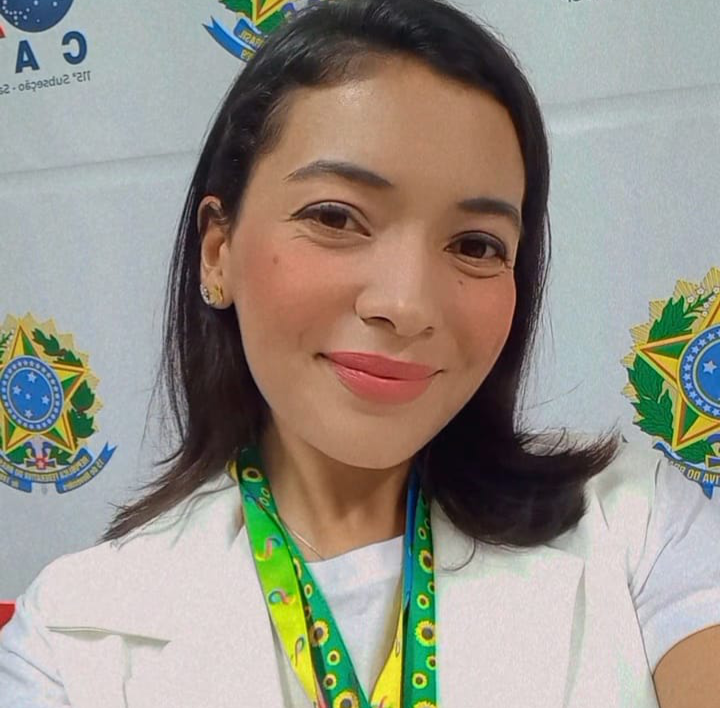

Temas em Destaque
Direitos Legais
Legislação e garantias para pessoas com TEA.Acesso a Serviços
Saúde, educação e assistência especializada.Apoio e Comunidade
A importância da rede de apoio às famílias atípicas.Entendendo o Autismo
O Transtorno do Espectro Autista (TEA) é uma condição neurológica de desenvolvimento que afeta a forma como a pessoa percebe e interage com o mundo. Caracteriza-se por diferenças na comunicação social, interação e comportamentos repetitivos ou restritos. Cada pessoa autista é única, com suas próprias habilidades e desafios.
Pessoas autistas podem apresentar sensibilidades sensoriais, interesses específicos e intensos, e formas diferentes de processar informações. O diagnóstico precoce e o apoio adequado são essenciais para que pessoas autistas desenvolvam seu pleno potencial. Neste evento, compartilharemos conhecimentos sobre os direitos das famílias atípicas e como garantir o suporte necessário para promover inclusão e qualidade de vida.
Programação
-
Ricardo Alexandre Rodrigues GarciaCurrículo: Advogado, Pai Atípico, Professor do curso de Direito da UNIFUNEC (Santa Fé do Sul - SP). Especialista em Direito à Saúde, em especial autismo. Tesoureiro e membro fundador da AMASSOL - Associação dos Amigos e Pais dos Autistas de Santa Fé do Sul.
-
Glaucilene MontemorCurrículo: Mãe Atípica, Estudante de Psicologia, Acompanhante Terapêutica e Membro fundador da AMASSOL - Associação dos Pais e Amigos dos Autistas de Santa Fé do Sul.